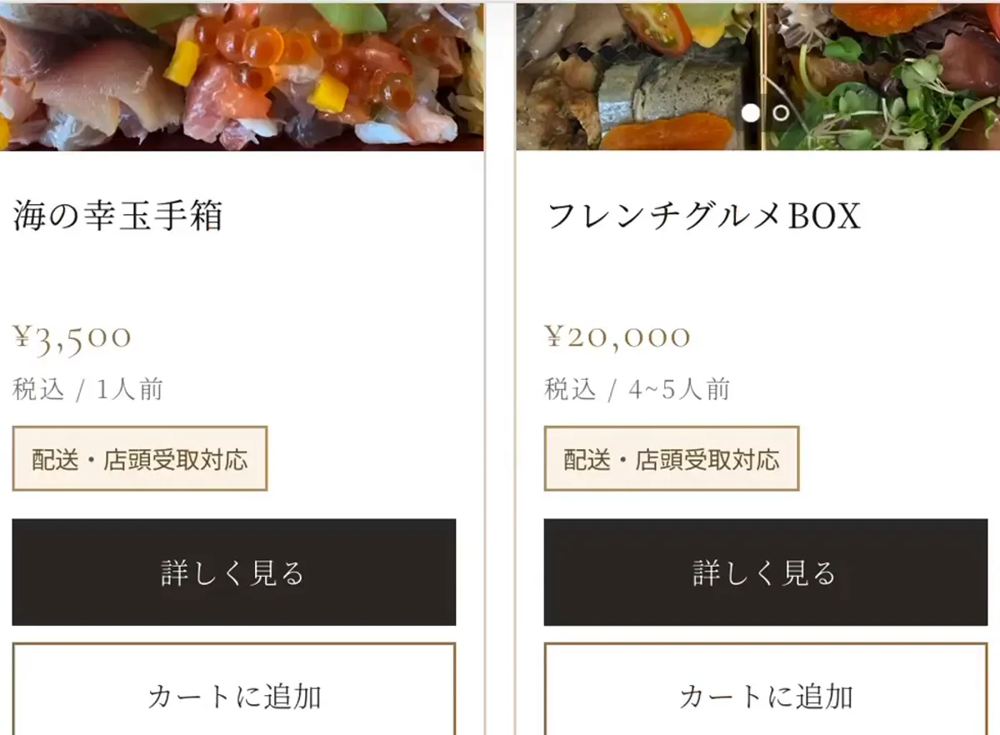

情報をひとつに整理
商品・料金・営業日・アクセス・予約方法を、初めての方にも分かりやすくまとめます。
WEB DESIGN · TOYAMA / ONLINE
Instagramだけでは伝えきれない商品、サービス、アクセス情報を整理し、初めてのお客様にも分かりやすいWebサイトを制作します。
WHY A WEBSITE?
投稿が流れてしまうSNSと、必要な情報へすぐ辿り着けるWebサイト。役割を分けることで、お客様が迷いにくくなります。
商品・料金・営業日・アクセス・予約方法を、初めての方にも分かりやすくまとめます。
営業時間外でも必要な情報を届け、問い合わせ前の疑問や不安を減らします。
予約・購入・問い合わせまでの流れを整え、見てもらうだけで終わらない設計にします。
SERVICES
目的や現在の運用方法を伺い、必要なページと機能を整理します。内容に合わせて個別にお見積もりします。
サービス、メニュー、アクセス、営業案内などを分かりやすく掲載。
商品販売、店頭受取・配達、オンライン決済に対応した販売導線を構築。
新サービスやキャンペーンの魅力を1ページにまとめ、問い合わせへ誘導。
SELECTED WORKS
見た目だけでなく、注文や問い合わせまで迷わず進めることを重視して制作しています。

サイトを見る ↗EC SITE / RESTAURANT
EC SITE / FOOD
WORK FLOW
専門用語をできるだけ使わず、一つずつ確認しながら進めます。
目的、必要な内容、現在のお悩みを伺います。
必要なページや機能、制作期間をご提案します。
スマホ表示も確認しながらサイトを形にします。
最終確認と修正を行い、公開までサポートします。